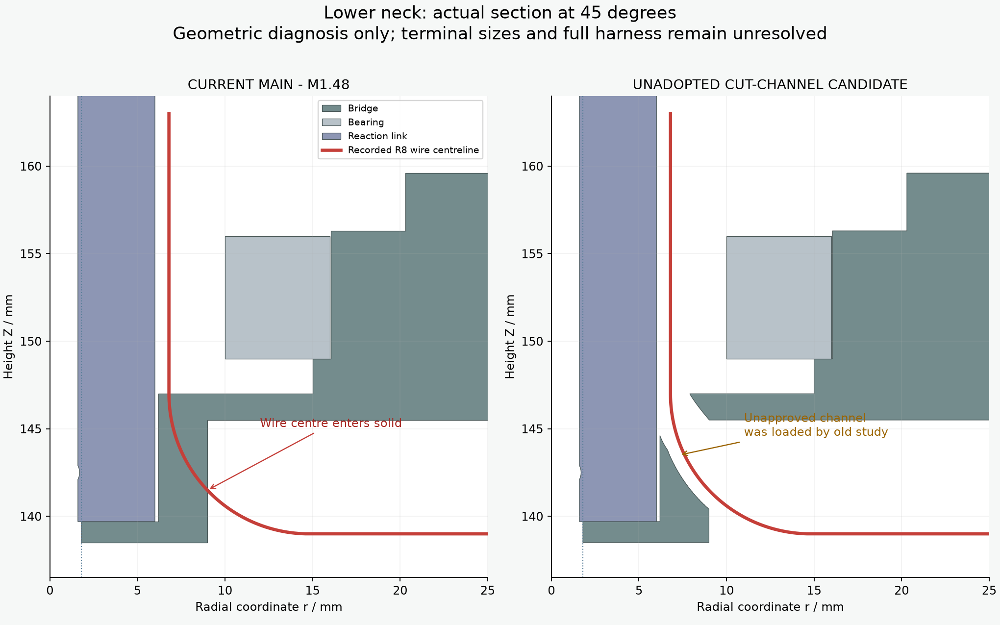
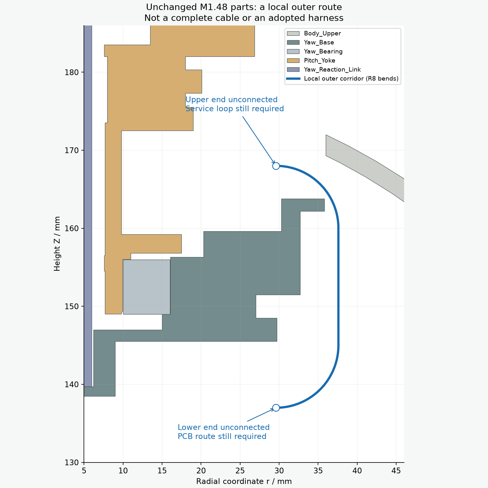

颈部走线：来源更正与当前实体复查
完整线束仍为 BLOCKED。 主模型没有采用任何通道候选。本页没有改模型或更新装配动作。
旧研究中“原桥座”的来源标签有误
初始化脚本加载了未采用的两处切槽候选。保存剖面与候选完全对应，与主模型不同。历史数值保留，来源声明已在原页面显著更正。

左：当前主模型。右：旧研究实际使用的独立候选。红线仅示意原来R8下弯中心线。
重新检查主模型，原下弯中心线确实穿入桥座。桥座直接下套时的端子碰撞也仍存在：局部相交约2.718mm³。中央小孔用于舵盘锁紧工具，未改成走线孔。这些结果只排除具体路径，不证明所有装法均不可行。
现有零件仍有外侧局部通路
456条局部候选中，72条在零位满足所设线径与间隙。把固定段上端从Z172mm收低至Z168mm并调整外侧半径后，选定的4段固定局部路径，在130个头部姿态下未检出间隙失败；两端尚未接到PCB和头部服务环，不能当成整条线束通过。

蓝线绕过原轴承外侧。圆圈表示尚未连接的两端；打印件保持原样。
| 检查 | 结论与边界 |
|---|
| 主模型来源 | PASS：直接读取M1.48保存实体，无研究候选替换。 |
| 原R8内侧下弯 | FAIL：四个方位的线中心均进入桥座材料。 |
| 外侧局部段 | 零位连续线段间隙PASS；选定四段头部130姿态检查PASS。不是完整线束。 |
| 采购与制造 | BLOCKED：真实压接端子、服务环、固定和完整装配顺序未完成。无采购或制作放行。 |
完整说明来源差分主模型碰撞外侧候选姿态检查命令与哈希整体剖面